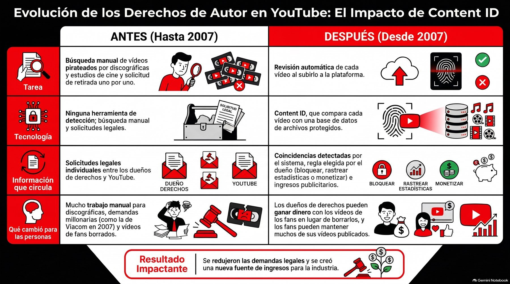

Evolución tecnológica
Seis hitos que explican cómo la tecnología cambió la forma de trabajar, vender y generar valor de YouTube. En tres de ellos cambió un proceso completo.
La línea del tiempo

Los hitos, uno a uno
Despliega cada hito para ver qué cambió, qué necesidad cubría y qué resultado tuvo.
Qué cambió: Se lanzó una web donde cualquier persona podía subir un vídeo y verlo directamente en el navegador, sin descargar el archivo ni tener servidores propios. La reproducción se hacía con Adobe Flash Player.
Qué necesidad atendía: Compartir vídeos en internet era muy difícil: los archivos pesaban demasiado para el correo y necesitaban programas externos.
Resultado: Crecimiento viral: en el verano de 2006 ya se subían unos 65.000 vídeos al día, con 100 millones de visualizaciones diarias. En octubre de 2006 Google compró la empresa.
Qué cambió: Una herramienta que escanea cada vídeo al subirlo y lo compara con una base de datos de archivos protegidos por derechos de autor.
Qué necesidad atendía: Evitar demandas millonarias, como la de Viacom en 2007, y permitir que los dueños de los derechos ganaran dinero con los vídeos de los fans en lugar de borrarlos.
Resultado: Menos demandas legales y una nueva fuente de ingresos para la industria musical y audiovisual.
Qué cambió: YouTube empezó a probar HTML5 en 2010 y en enero de 2015 lo convirtió en su reproductor por defecto, abandonando el complemento Flash.
Qué necesidad atendía: Flash tenía problemas de seguridad, consumía mucha batería y no funcionaba en muchos móviles y tabletas, como el iPhone o el iPad.
Resultado: Compatibilidad con móviles, menor consumo y vídeos que ajustan su calidad automáticamente a la velocidad de la conexión.
Qué cambió: Se incorporó la retransmisión en directo en los canales de los creadores, con chat en tiempo real.
Qué necesidad atendía: Ver eventos en directo (noticias, conciertos, deportes o videojuegos) sin depender de la televisión ni de otras plataformas.
Resultado: Récords de audiencia simultánea, como el salto de Felix Baumgartner en 2012, con unos 8 millones de espectadores en directo, y nuevas formas de ingresos como los Super Chats.
Qué cambió: YouTube sustituyó su sistema de recomendaciones basado en clics y reglas sencillas por redes neuronales profundas (deep learning) desarrolladas con Google Brain.
Qué necesidad atendía: Elegir, entre miles de millones de vídeos, los más adecuados para cada persona y aumentar el tiempo que pasa en la plataforma.
Resultado: Recomendaciones personalizadas para cada usuario. Los ingenieros de YouTube explicaron el sistema en un artículo de Google Research en 2016.
Qué cambió: En septiembre de 2020 llegó Shorts, un formato de vídeo vertical y corto que se graba desde el móvil. Desde 2023 se suman herramientas de IA generativa para crear fondos, editar y doblar vídeos a otros idiomas.
Qué necesidad atendía: Competir con TikTok e Instagram Reels y facilitar que cualquiera cree vídeos atractivos desde el teléfono.
Resultado: Shorts pasó de 70.000 millones de visualizaciones diarias en 2024 a más de 200.000 millones en junio de 2025, según el CEO de YouTube, Neal Mohan, y ha atraído a millones de nuevos creadores.
Un proceso, antes y después: Content ID
Cómo cambió la gestión de los derechos de autor en YouTube a partir de 2007: de una tarea manual, lenta y llena de demandas, a un sistema automático que además genera ingresos.

| Aspecto | Antes (hasta 2007) | Después (desde 2007) |
|---|---|---|
| Tarea | Búsqueda manual de vídeos pirateados y retirada uno por uno. | Revisión automática de cada vídeo al subirlo. |
| Tecnología | Ninguna herramienta de detección. | Content ID compara cada vídeo con una base de datos de archivos protegidos. |
| Información que circula | Solicitudes legales individuales entre los dueños de derechos y YouTube. | Coincidencias detectadas, la regla elegida por el dueño (bloquear, rastrear o monetizar) e ingresos publicitarios. |
| Qué cambió para las personas | Mucho trabajo manual, demandas millonarias (Viacom, 2007) y vídeos de fans borrados. | Los dueños ganan dinero con los vídeos de los fans y muchos vídeos siguen publicados. |